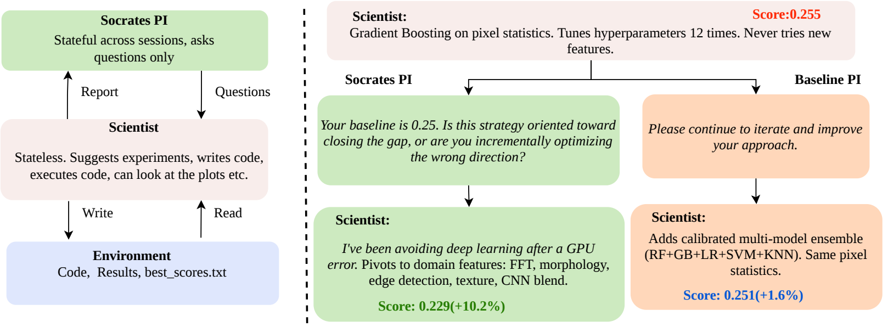

Structured Questioning Unlocks Latent Knowledge in AI Research Agents
A question-only advisor — no tools, no answers, no directives — improves Kaggle test scores by +55.9% on average across five MLE-bench tasks.
Vrabac, Hebbar, Manawat, Palanimalai, Verboomen, Juneja, Bhatia, Baskaran · Hexo.ai
1 / 10
on MMLU machine-learning content — cross-validation, leakage, overfitting. They can explain it all.
Kaggle bronze rate on MLE-bench. They tune hyperparameters, introduce target leakage, and fixate on one model family.
Same model. Same parametric knowledge. The gap is between what the model knows and what it applies during autonomous operation.
2 / 10
The bottleneck is knowledge activation, not knowledge capacity.
Relevant parametric knowledge exists in the weights but is not surfaced into the working context at decision time.
3 / 10

Pair a tool-using Scientist with a question-only Socrates advisor. Before each experiment, the Scientist writes a plan. Socrates reviews and responds with only questions, until it emits [APPROVED].
4 / 10
Socrates is forbidden from:
Cannot say "use 5-fold CV".
Cannot say "try a different architecture".
No code execution. No file I/O. Only questions.
Because the advisor cannot transfer information, any improvement must originate from the Scientist's own parametric knowledge — merely activated by the question.
5 / 10
| Condition | Description | What it isolates |
|---|---|---|
| Scientist-only | Single agent, full tools, no supervision. | Standard single-agent baseline. |
| Baseline PI | Second agent in the same scaffold — but only generic encouragement ("please keep iterating"). | Matched in tokens and turns. Controls for having any second agent. |
| Socrates | Full protocol: question-only advisor, [APPROVED] gate. | The intervention. |
A Socrates-over-Baseline-PI win therefore measures the nature of the questioning, not the presence of supervision.
6 / 10
| Task | Scientist | Baseline PI | Socrates | Δ vs Sci |
|---|---|---|---|---|
| Statoil | 0.255 | 0.251 | 0.229 | +10.5% |
| COVID | 0.389 | 0.308 | 0.294 | +24.4% |
| Ventilator | 1.534 | 0.815 | 0.853 | +44.4% |
| NFL | 0.198 | 0.537 | 0.584 | +195.4% |
| Smartphone | 6.285 | 5.993 | 5.984 | +4.8% |
Best score on 4 of 5 tasks · mean improvement +55.9% · beats Baseline PI on 4 of 5.
7 / 10
COVID: train/val gap 80% → 27%. 512/963 features had zero importance. NFL: caught val-set threshold tuning. Ventilator: caught target leakage.
Statoil unprompted: 12/16 experiments are GBM tweaks. Socrates: 9 experiments across 9 model families.
Scientist keeps tool access — "how many features have zero importance?" triggers analysis right then. Discoveries happen during review, not before.
NFL: features 10→18 (expand). Ventilator: 29→15 (contract). COVID: 963→250 (regularize). Same advisor, opposite directions — the Scientist retrieves its own domain knowledge.
8 / 10
Baseline PI 0.815 MAE beats Socrates 0.853.
The search space rewards volume of feature-interaction sweeps. Socrates' structured-review overhead costs experiments that Baseline PI spent on more model variants.
Take-away: structured questioning helps where methodology — not iteration count — is the bottleneck.
10-seed Scientist-only run on Smartphone:
Socrates achieved 3.47 — below mean − 1 SD (3.44). Not seed noise alone.
9 / 10
The bottleneck for autonomous LLM research agents is knowledge activation, not knowledge availability.
A question-only advisor — deliberately limited, no tools, no answers — is enough to bridge that gap on a meaningful fraction of tasks. It's cheap, it's simple, it drops into existing agent scaffolds.
10 / 10